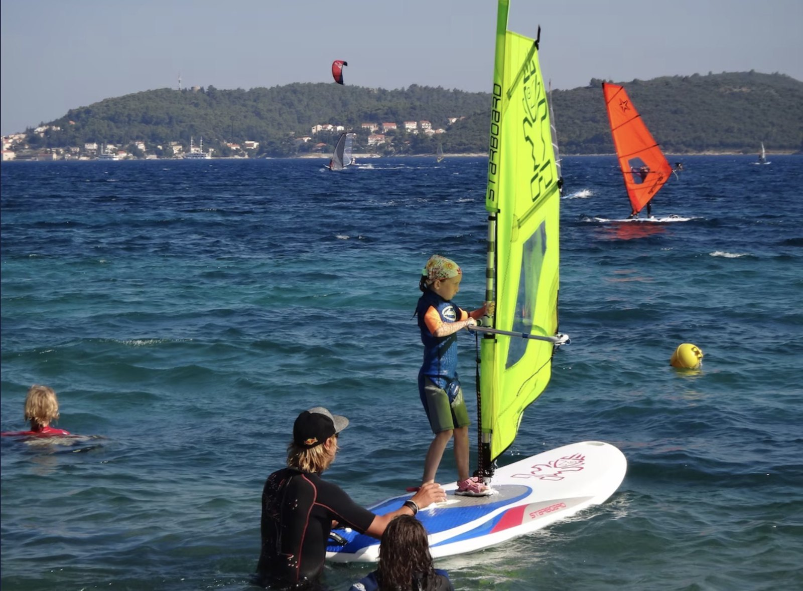

Viganj
Villa Rosa sits right on the water in the heart of Viganj, a small village on the Pelješac Peninsula. It's a walk-everywhere kind of place: family-run restaurants serving fresh seafood, a handful of friendly bars for sunset drinks, and a local shop just a minute from the door.
And when you're ready to see more, the ferry to Korčula Island leaves from the village — around ten minutes across the water to one of Croatia's most beautiful old towns.
A few of our favourite places nearby — most of them an easy walk from Villa Rosa.
A laid-back waterfront spot for food and drinks, an easy 15-minute stroll along the coast from Villa Rosa.
Just around the corner from Villa Rosa.
An easy stroll from the house for food and drinks by the water.
A great nearby option when you want to venture a little further.
A fun option across the water, reached by boat taxi.
And plenty more along the coast…
Villa Rosa sits in Viganj on the Pelješac peninsula, with Korčula just across the channel. Explore the map to see exactly where we are.
Viganj is one of Croatia's best-known spots for windsurfing, kitesurfing and stand-up paddleboarding, thanks to the reliable Adriatic wind funnelling between the mainland and Korčula.
Viganj is one of Croatia's best-known spots for windsurfing and kitesurfing, with the afternoon Maestral wind bringing brilliant conditions to the bay. Whether you already know what you’re doing or fancy trying it for the first time, there are watersports centres and lessons available nearby. Or simply grab a drink by the water and watch the sails fill the bay.

Pelješac is one of Croatia's great wine-growing peninsulas, with quiet coves and secluded beaches beyond the village. See the full list of day trips and things to do nearby.
Explore Pelješac & Korčula →